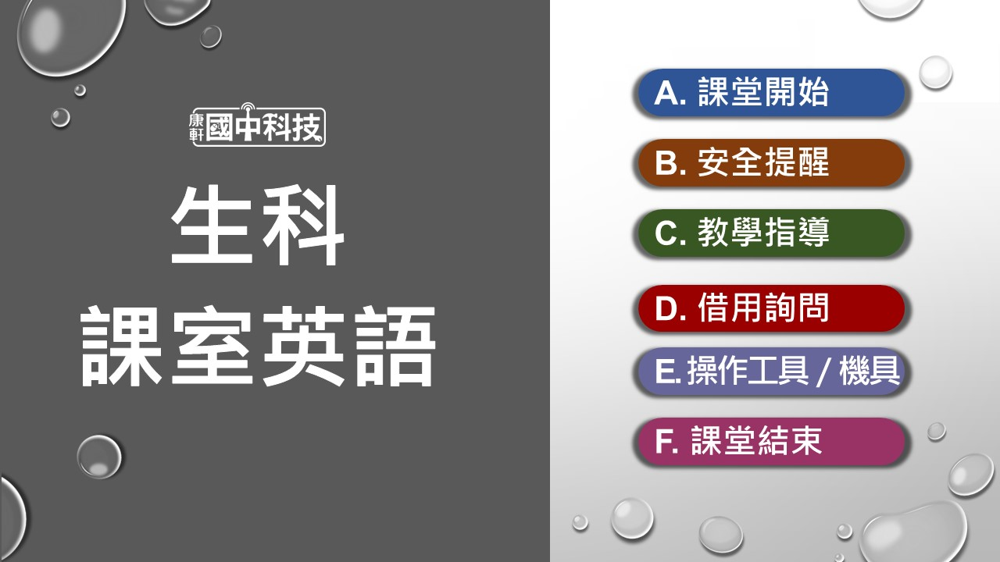

《快速連結》
教學檔案下載
影片資源清單
雙語教學資源
《六冊補充資源彙整》
活動教案、步驟說明書
學習單

《快速連結》
《六冊補充資源彙整》
◤電子書、PPT
[連結] 康軒數位高手
◤全冊打包下載
[下載] 全書教學檔案
◤各章檔案
【緒論 好好用設計】
[下載] SDG11永續城市與社區_學習單（學生版） [下載] SDG11永續城市與社區_學習單（教師版） [下載] SDG14水下生命_學習單（學生版） [下載] SDG14水下生命_學習單（教師版）
【第 1 章 步行機器人】[下載] 步行機器人（手搖版）_活動步驟說明書 [下載] 步行機器人（手搖版）_教案 [下載] 步行機器人（線控版）_活動步驟說明書 [下載] SDG7可負擔的潔淨能源_學習單（學生版） [下載] SDG7可負擔的潔淨能源_學習單（教師版）
【第 2 章 舞動光影】[下載] 舞動光影_活動步驟說明書 [下載] 舞動光影_教案
【活動PLUS 坦克大進擊】[下載] 坦克大進擊_活動步驟說明書 [下載] 坦克大進擊_學習單（學生版） [下載] 坦克大進擊_學習單（教師版）
【活動PLUS 手搖發電創意應用】[下載] 手搖發電創意應用_活動步驟說明書
【活動PLUS 法拉第手電筒】[下載] 法拉第手電筒_活動步驟說明書
【活動PLUS 行動檯燈】[下載] 行動檯燈_活動步驟說明書 [下載] 行動檯燈_學習單（學生版） [下載] 行動檯燈_學習單（教師版）
【緒論 好好用設計】
【P.108】 光害 (2:55)
【P.108】 珊瑚的危機 (3:47)
【P.108】 空汙 (3:48)
【P.108】 新聞：臺灣湖泊優養化元凶 (2:15)
【P.109】 新聞︰重金屬汙染農地 (2:24)
【P.109】 關於塑膠的這幾件事 (5:45)
【P.109】 為何我無法停止上網及看手機？ (3:52)
【P.110】 新聞：環境殺手_塑膠 (5:29)
【P.110】 新聞：塑膠廢棄物流入海洋 (8:22)
【P.110】 海洋的塑膠祕密 (4:53)
【P.111】 新聞：一年只開24天冷氣的綠建築 (2:33)
【P.111】 成大綠色魔法學校 (3:27)
【P.112】 新聞：那瑪夏民權國小綠建築 (3:23)
【P.112】 新聞：北投圖書館綠建築 (2:53)
【P.114】 淺談資源回收 (1:47)
【P.114】 資源回收宣傳影片 (3:18)
【P.115】 從搖籃到搖籃的概念 (1:38)【第 1 章 步行機器人】
【P.123】 二足機械 (5:09)
活動示範影片
●活動示範影片
●生科實作Follow Me︰步行機器人
1-1能源與電
【P.126】 你知道再生能源有哪些嗎？ (4:45)
【P.126】 太陽能熱水器原理 (4:44)
【P.127】 太陽能發電 (2:22)
【P.127】 台電臺南鹽田光電站 (3:33)
【P.127】 浮動型太陽光電 (1:36)
【P.127】 太陽熱能發電 (2:57)
【P.127】 西班牙熔鹽太陽能發電 (2:39)
【P.128】 風力旋轉裝置Whirligig (1:12)
【P.128】 坎寬巴TED演講 (5:55)
【P.129】 風力發電 (4:34)
【P.129】 台電離岸風電一期 (3:48)
【P.129】 借鏡丹麥的離岸風電 (7:00)
【P.130】 水車灌溉實例 (0:43)
【P.130】 水碓 (4:47)
【P.131】 水力發電 (1:57)
【P.131】 水力發電知多少 (4:59)
【P.131】 川流電湧_水力發電設施內部 (2:45)
【P.132】 什麼是「化石燃料」？ (1:14)
【P.132】 石油 (4:43)
【P.133】 火力發電基本原理 (2:14)
【P.133】 燃煤發電知多少 (4:57)
【P.133】 火力電廠如何減少空汙排放 (1:00)
【P.134】 核能知多少 (2:22)
【P.135】 核能電廠結構與反應爐 (1:18)
【P.135】 核廢料要怎麼處理 (1:00)
【P.136】 生質能入門 (2:21)
【P.136】 新聞：廚餘發電 (3:41)
【P.136】 地熱發電 (2:25)
【P.136】 地熱能入門 (2:06)
【P.136】 新聞︰清水地熱商轉(7:51)
【P.137】 新聞︰廢熱創營收 (4:58)
【P.138】 為什麼要興建變電所 (1:00)
【P.139】 電桿怎麼設置 (0:47)
【P.139】 山區迷路就靠電力座標 (1:59)
【P.139】 輸配電設備的大自然挑戰 (5:13)
【P.140】 臺灣主要的發電方式是什麼？ (1:00)
【P.142】 台灣電力app介紹 (2:03)
【P.143】 節電百百招 (0:30)
【P.143】 省電省錢大作戰_待機篇 (0:56)
【P.144】 儲能系統：電力調節好幫手 (3:04)
【P.144】 台電南鹽光儲能系統 (3:06)
【P.145】 新聞：太陽能車 (1:55)
【P.145】 新聞︰太陽能飛機 (4:33)
【P.145】 新聞：廢棄太陽光電板何去何從 (14:18)
【P.146】 手機沒充飽可以拔掉電源嗎？ (1:49)
【P.146】 新聞：鋰電池丟垃圾車起火 (1:30)
【P.146】 鋰電池爆炸原因 (0:45)
【P.146】 行動電源上的數字不是真的容量？ (4:44)1-2步行機器人設計
【P.148】 新聞：機器人公民Sophia (1:54)
【P.148】 機械手臂_汽車製造 (14:16)
【P.149】 機器人跳舞 (1:17)
【P.151】 直流馬達動畫 (10:03)
【P.155】 手提式線鋸機原理 (1:56)
【P.155】 往復曲柄滑塊機構 (1:05)
【P.155】 擺動曲柄滑塊機構 (1:02)
【P.155】 機器人步行機構 (1:03)
【P.156】 划船機器人 (5:40)
【P.156】 往復曲柄滑塊機構 (1:05)
【P.156】 擺動曲柄滑塊機構 (1:02)
【P.156】 機器人步行機構 (1:03)
【P.165】 楊森TED演講 (8:13)
【P.165】 strandbeest 2021 (4:30)
【P.165】 楊森連桿 (0:30)
【P.165】 切比雪夫連桿 (0:20)
1-4機具材料
●機具材料影片
科技廣角
【P.186】 智慧電網 (3:08)
【第 2 章 舞動光影】
活動示範影片
●活動示範影片
●生科實作Follow Me︰舞動光影
2-1 燈光
【P.196】 愛迪生與特斯拉的電流大戰 (8:07)
【P.196】 光纖雷射切割機 (7:12)
【P.198】 電燈泡的原理 (3:05)
【P.203】 如何選擇正確的LED燈泡 (1:01)
【P.203】 新聞：挑LED燈勿忘測試亮度 (1:38)
【P.204】 新聞：LED燈會傷眼？ (3:04)
【P.205】 燈具回收的方法 (1:08)
【P.205】 LED回收處理流程 (2:13)
【P.205】 廢照明燈具的回收處理 (1:23)
2-2 創意燈具設計
【P.208】 新聞：廢材變藝術燈具 (1:00)
【P.221】 旋轉燈箱 (0:48)
2-4 機具材料
●機具材料影片
【P.232】 3C 線材懶人包 (9:12)
【P.237】 數位教具：色碼電阻
【課室英語教學網】
[連結] 課室英語教學網

【雙語教學投影片】
[連結] 課室雙語、課程內容雙語PPT
